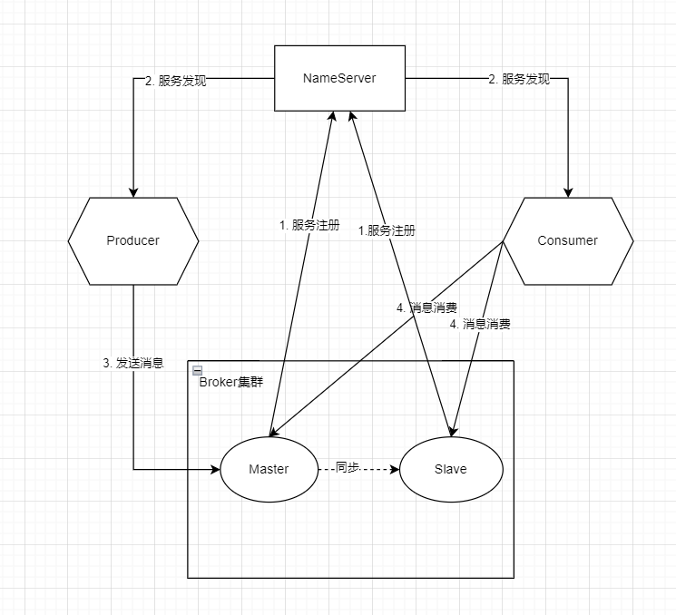

RocketMQ是有阿里巴巴开发的, 作为一款纯java、分布式、队列模型的开源消息中间件，支持事务消息、顺序消息、批量消息、定时消息、消息回溯等。
特点:
核心组件:
所以从功能上看应该是和 ZooKeeper 差不多，据说 RocketMQ 的早期版本确实是使用的ZooKeeper ，后来改为了自己实现NameServer. Name Server和ZooKeeper的作用大致是相同的，从宏观上来看，Name Server做的东西很少，就是保存一些运行数据，Name Server之间不互连，这就需要broker端连接所有的Name Server，运行数据的改动要发送到每一个Name Server来保证运行数据的一致性（这个一致性确实有点弱），这样就变成了Name Server很轻量级，但是broker端就要做更多的东西了.
Producer Group和Consumer Group
架构图

名词解释
代码示例
这里采用java:
maven依赖:
<dependencies>
<dependency>
<groupId>org.apache.rocketmq</groupId>
<artifactId>rocketmq-client</artifactId>
<version>4.5.2</version>
</dependency>
</dependencies>
生产者:
import org.apache.rocketmq.client.producer.DefaultMQProducer;
import org.apache.rocketmq.client.producer.SendResult;
import org.apache.rocketmq.common.message.Message;
import org.slf4j.Logger;
import org.slf4j.LoggerFactory;
import org.springframework.beans.factory.annotation.Value;
import org.springframework.stereotype.Component;
import javax.annotation.PostConstruct;
import javax.annotation.PreDestroy;
import java.nio.charset.StandardCharsets;
import java.util.Collections;
@Component
public class DemoProducer {
private static final Logger logger = LoggerFactory.getLogger(DemoProducer.class);
@Value("${datasync.mq.producer.group:group1}")
private String group;
@Value("${datasync.mq.namesrv:127.0.0.1:9876}")
private String nameSrvAddr;
@Value("${datasync.mq.producer.topic:aaa}")
private String topic;
@Value("${datasync.mq.producer.tag:*}")
private String tag;
private DefaultMQProducer producer;
@PostConstruct
public void init(){
try{
producer = new DefaultMQProducer(group);
producer.setNamesrvAddr(nameSrvAddr);
producer.start();
}catch (Exception e){
logger.error("producer init failed. msg : {}", e.getMessage(), e);
}
}
public void send(String messageKey, String message){
try{
Message msg = new Message(topic, message.getBytes(StandardCharsets.UTF_8));
msg.setKeys(Collections.singletonList(messageKey));
SendResult result = producer.send(msg, 10000);
logger.info("send result : {}", result);
}catch (Exception e){
logger.error("send message failed, msg : {}", e.getMessage(), e);
}
}
@PreDestroy
public void destroy(){
producer.shutdown();
}
}
消费者:
import org.apache.rocketmq.client.consumer.DefaultMQPushConsumer;
import org.apache.rocketmq.client.consumer.listener.ConsumeConcurrentlyContext;
import org.apache.rocketmq.client.consumer.listener.ConsumeConcurrentlyStatus;
import org.apache.rocketmq.client.consumer.listener.MessageListenerConcurrently;
import org.apache.rocketmq.common.message.MessageExt;
import org.slf4j.Logger;
import org.slf4j.LoggerFactory;
import org.springframework.beans.factory.annotation.Value;
import org.springframework.stereotype.Component;
import javax.annotation.PostConstruct;
import javax.annotation.PreDestroy;
import java.util.List;
@Component
public class DemoConsumer {
private static final Logger logger = LoggerFactory.getLogger(DemoConsumer.class);
@Value("${datasync.mq.consumer.group:default_consumer_group}")
private String group;
@Value("${datasync.mq.namesrv:127.0.0.1:9876}")
private String nameSrvAddr;
@Value("${datasync.mq.consumer.topic:aaa}")
private String topic;
@Value("${datasync.mq.consumer.tag:*}")
private String tag;
private DefaultMQPushConsumer consumer;
@PostConstruct
public void init(){
try{
consumer = new DefaultMQPushConsumer(group);
consumer.subscribe(topic, tag);
consumer.registerMessageListener(new MessageListenerConcurrently() {
@Override
public ConsumeConcurrentlyStatus consumeMessage(List<MessageExt> list, ConsumeConcurrentlyContext consumeConcurrentlyContext) {
for (MessageExt messageExt : list) {
logger.info("receive msg : {}", new String(messageExt.getBody()));
}
return ConsumeConcurrentlyStatus.CONSUME_SUCCESS;
}
});
consumer.start();
}catch (Exception e){
logger.error("consumer init failed. msg : {}", e.getMessage(), e);
}
}
@PreDestroy
public void destroy(){
consumer.shutdown();
}
}
场景
//设置消费者的消费模式为广播模式：所有客户端接收的消息都是一样的
consumer.setMessageModel(MessageModel.BROADCASTING);
当消息消费后未正常返回消费成功的信息将启动消息重试机制.
死信队列
当消息消费重试到达了指定次数（默认16次）后，MQ将无法被正常消费的消息称为死信消息（Dead-Letter Message）. 死信消息不会被直接抛弃，而是保存到了一个全新的队列中，该队列称为死信队列（Dead-Letter Queue）
特点:
在监控平台中，通过查找死信，获取死信的messageId，然后通过id对死信进行精准消费